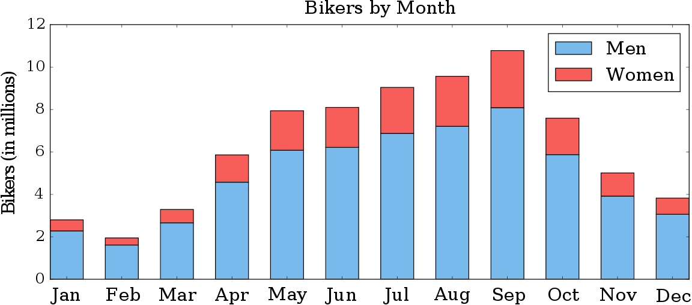
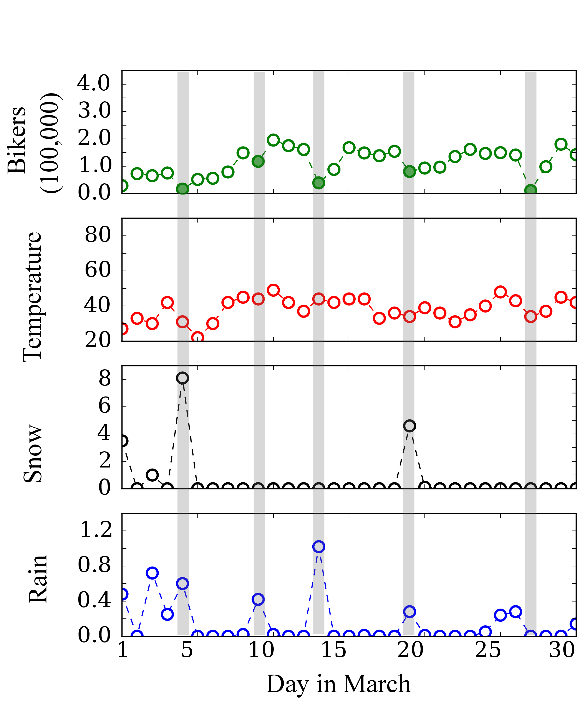
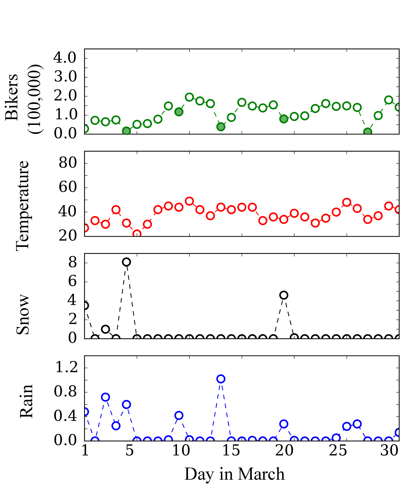
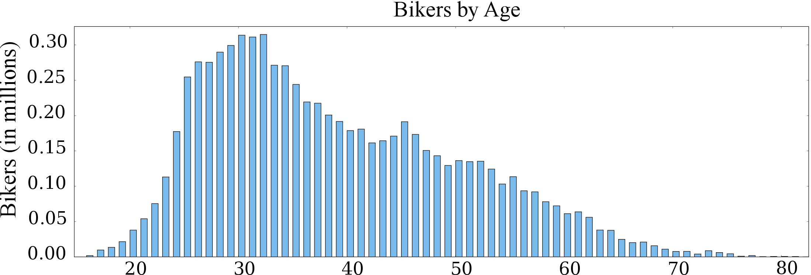
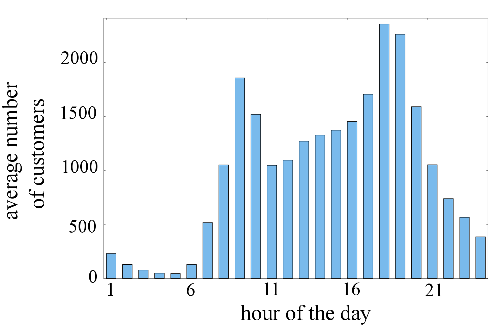
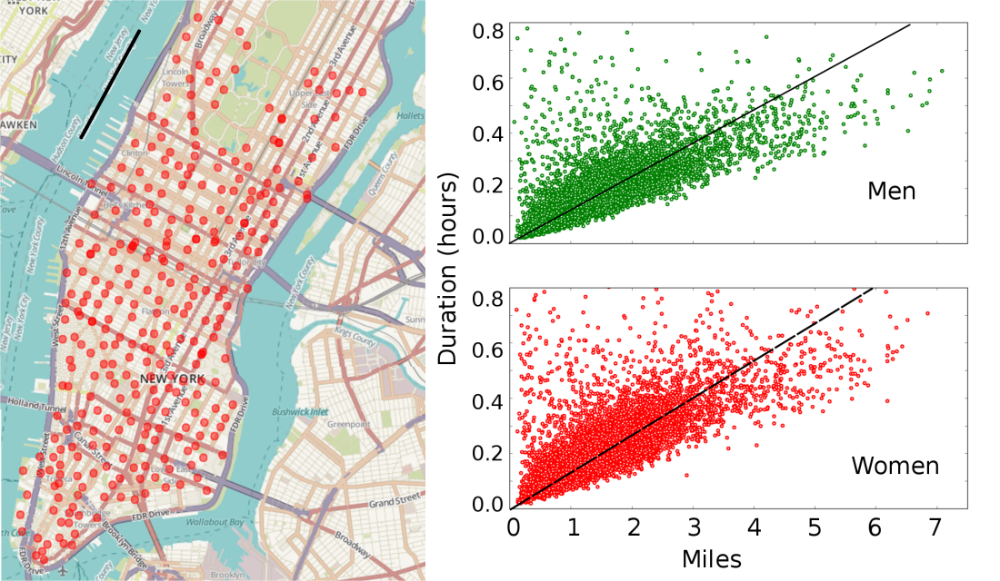

The Citi Bike Share is a bike sharing service provided in New York City. The data for this service is publicly available
here. It dates back to June 2013 and contains fields like trip time, duration, start and end points and gender and age of the biker using the service.
Aims of the Project
There are two aims for this project:
- 1. Formulating an efficient predictive model for the demand of the bike sharing service.
- 2. Predicting the average speed of a bike ride in NYC based on location, time and weather.
In the process of formulating predictive models, I will also perform exploratory analysis which will uncover useful information about the customer base of the bike share system. Some exploratory analysis follows. The code used for generating these plots is available on
GitHub
Do seasons influence the bike share demand?
The month of the year has a considerable influence on the number of bike share customers. Compared to February which is the least popular month, customers increase more than
five fold in September. This influence is more pronounced for women bikers. The fraction of customers that are women increases from
1/6 th in February to 1/4 th in September.

How does weather influence the bike share demand?
Weather data for New York City is available from
National Centers for Environment Information. The weather data for March 2015 is compared with the bike share demand below. The local dips in the bike share demand are already highlighted.


At a first glance, influence of snow and rain definitely seems to affect the bike share demand. Although the weather conditions for the last highlighted day are normal apart from low temperatures, this along with the fact that the day was a Sunday could account for the low bike share demand on that day.
Who uses the Citi Bike Share service?
The number of bikers for the entire year are categorized based on their age in the following histogram. There is a noticeable rise in the number of customers above 23 years of age. The service is also used heavily during peak hours. These trends indicate that a major customer base of the service is
working graduates commuting to work.


What is the average speed of the bike ride?
Since most of the bike rides are in the streets of Manhattan which have a grid structure, the distance covered in a ride is roughly equal to the Manhattan distance between the start and end locations. First, all the bike share stations falling in Manhattan are identified using DBSCAN clustering technique. As a first step in determing if there is a trend in the average speeds of bike rides, a scatter plot of ride duration with respect to distance covered is shown for men and women.

The average speed of the bike ride when the customers are men is found to be
8.25 miles/hr while the average speed of the ride for women is found to be
7.38 miles/hr. This suggests a trend in the average speed based on the gender of the biker. Of course, this is a first step and a generalization. The influence of peak hours (and resulting heavy traffic) and weather conditions can be used as potential indicators to estimate average speed as well.
Conclusion
The demands for the bike sharing service are strongly influenced by time and weather conditions. The average speed of the bike ride varies with respect to at least one feature. In further analysis, additional features will be used to build the two predictive models.